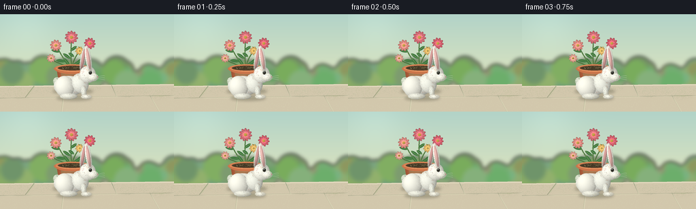
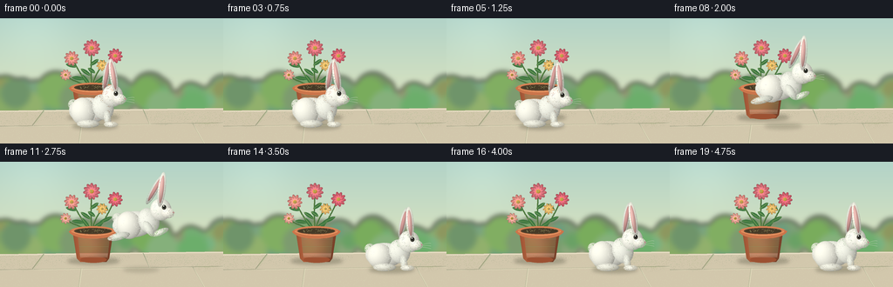

CODING AGENTS AS PIXEL WORLD MODELS
traex/GPT-6.1-Sol · dynamic_spatial_relationship_0021
点击播放 · 原生 RGB 像素
逐轮保存的候选
回放视频、检查图与代码变化。
每份候选均可单独播放。实际图片检查记录在下方工具轨迹中。
候选 01播放与检查图
点击播放 · 原生 RGB 像素


展开代码变化
--- 上一保存版本
+++ 本次保存版本
@@ -0,0 +1,203 @@
+from pathlib import Path
+import math
+import numpy as np
+from PIL import Image, ImageDraw, ImageFilter
+import artifact_io
+
+ROOT=Path(__file__).resolve().parent
+W,H,S=256,144,4
+rng=np.random.default_rng(16)
+
+def layer(): return Image.new('RGBA',(W*S,H*S),(0,0,0,0))
+def xy(points): return [(round(x*S),round(y*S)) for x,y in points]
+def ellipse(im,box,fill,outline=None,width=1):
+ ImageDraw.Draw(im).ellipse(tuple(round(v*S) for v in box),fill=fill,outline=outline,width=max(1,round(width*S)))
+def line(im,pts,fill,width=1): ImageDraw.Draw(im).line(xy(pts),fill=fill,width=max(1,round(width*S)),joint='curve')
+def poly(im,pts,fill): ImageDraw.Draw(im).polygon(xy(pts),fill=fill)
+def bez(points,n=40):
+ out=[]
+ for t in np.linspace(0,1,n):
+ p=(1-t)**3*np.array(points[0])+3*t*(1-t)**2*np.array(points[1])+3*t*t*(1-t)*np.array(points[2])+t**3*np.array(points[3]);out.append(tuple(p))
+ return out
+
+def ball(im,c,rx,ry,color,angle=0,fur=False,seed=1):
+ # Smooth, softly lit ellipsoidal form with a fine fur edge.
+ pad=3
+ r=math.ceil(max(rx,ry)+pad)
+ size=2*r*S+1
+ yy,xx=np.mgrid[-r:r:complex(size),-r:r:complex(size)]
+ a=math.radians(angle); u=xx*math.cos(a)+yy*math.sin(a);v=-xx*math.sin(a)+yy*math.cos(a)
+ q=(u/rx)**2+(v/ry)**2
+ z=np.sqrt(np.maximum(0,1-q))
+ light=np.clip(.75+.21*z-.14*u/rx-.13*v/ry,.53,1.12)
+ rgb=np.clip(np.array(color)[None,None,:]*light[...,None]+8*z[...,None],0,255)
+ al=np.clip((1-np.sqrt(q))*S*min(rx,ry)+.6,0,1)*255
+ arr=np.zeros((size,size,4),dtype=np.uint8);arr[:,:,:3]=rgb;arr[:,:,3]=al
+ tile=Image.fromarray(arr,'RGBA')
+ if fur:
+ rr=np.random.default_rng(seed); d=ImageDraw.Draw(tile)
+ for k in range(220):
+ theta=rr.uniform(0,2*math.pi);radius=math.sqrt(rr.uniform(.12,.98));pu=rx*radius*math.cos(theta);pv=ry*radius*math.sin(theta)
+ px=pu*math.cos(a)-pv*math.sin(a)+r;py=pu*math.sin(a)+pv*math.cos(a)+r
+ dl=rr.uniform(.35,.8);dx=math.cos(theta+a)*dl;dy=math.sin(theta+a)*dl
+ d.line([(int(px*S),int(py*S)),(int((px+dx)*S),int((py+dy)*S))], fill=(255,251,237,int(rr.integers(20,65))),width=1)
+ im.alpha_composite(tile,(round((c[0]-r)*S),round((c[1]-r)*S)))
+
+# A warm, sunlit garden, with an uncluttered stone terrace.
+y,x=np.mgrid[0:H*S,0:W*S].astype(float);y/=S;x/=S
+sky=np.zeros((H*S,W*S,3));t=np.clip(y/106,0,1)
+sky[:]=np.array([178,211,200])[None,None,:]*(1-t[:,:,None])+np.array([223,229,190])[None,None,:]*t[:,:,None]
+sky+=9*np.exp(-((x-40)**2+(y-16)**2)/1800)[:,:,None]
+bg=Image.fromarray(np.uint8(np.clip(sky,0,255))).convert('RGBA')
+# Soft focus hedges behind the terrace.
+b=layer()
+for i in range(75):
+ cx=rng.uniform(-20,275);cy=rng.uniform(80,106);r=rng.uniform(6,22)
+ col=tuple(map(int,[rng.uniform(105,149),rng.uniform(148,180),rng.uniform(91,130)]))+(255,)
+ ellipse(b,(cx-r,cy-r,cx+r,cy+r),col)
+b=b.filter(ImageFilter.GaussianBlur(3*S));bg.alpha_composite(b)
+# Pale limestone terrace.
+ground=layer();poly(ground,[(0,106),(256,103),(256,144),(0,144)],(210,199,172,255))
+line(ground,[(0,107),(256,104)],(241,232,206,255),1)
+for pts in [[(0,124),(256,120)],[(50,106),(37,123)],[(164,105),(171,121)],[(93,122),(90,144)],[(221,121),(234,144)]]:
+ line(ground,pts,(168,160,138,150),.7)
+ line(ground,[(a+.7,b+.7) for a,b in pts],(238,227,200,140),.5)
+# Faint stone grain, stable across the video.
+d=ImageDraw.Draw(ground)
+for _ in range(4200):
+ xx=rng.uniform(0,W); yy=rng.uniform(107,H)
+ d.point((round(xx*S),round(yy*S)),fill=(145,132,112,int(rng.integers(8,40))))
+bg.alpha_composite(ground)
+
+# Small shaded contact shadows are softened independently of the objects.
+def shadow(im,c,rx,ry,alpha):
+ sh=layer();ellipse(sh,(c[0]-rx,c[1]-ry,c[0]+rx,c[1]+ry),(54,57,37,alpha));sh=sh.filter(ImageFilter.GaussianBlur(2*S));im.alpha_composite(sh)
+shadow(bg,(107,114),30,4,75)
+
+# Leaves and stems: a coherent flowering plant rather than disconnected blooms.
+plant=layer()
+stems=[[(106,82),(103,66),(105,46),(105,34)],[(104,82),(94,67),(86,53),(83,47)],[(108,82),(121,68),(127,52),(132,43)],[(105,83),(107,65),(115,59),(117,53)],[(105,82),(92,72),(78,72),(75,64)]]
+for p in stems:
+ line(plant,bez(p),(59,103,56,255),1.5)
+ line(plant,bez([(a-.3,b) for a,b in p]),(117,149,73,255),.45)
+def leaf(cx,cy,length,angle):
+ a=math.radians(angle);ux,uy=math.cos(a),math.sin(a);vx,vy=-uy,ux
+ p0=(cx,cy);p1=(cx+length*ux,cy+length*uy)
+ pts=bez([p0,(cx+length*.25*ux+3*vx,cy+length*.25*uy+3*vy),(cx+length*.8*ux+3*vx,cy+length*.8*uy+3*vy),p1])
+ pts+=bez([p1,(cx+length*.8*ux-3*vx,cy+length*.8*uy-3*vy),(cx+length*.2*ux-2*vx,cy+length*.2*uy-2*vy),p0])
+ poly(plant,pts,(63,119,65,255));line(plant,[p0,p1],(135,164,88,220),.45)
+for params in [(104,66,14,-145),(103,54,12,-35),(97,70,15,-172),(113,70,17,-24),(124,56,12,-140),(88,56,13,-165),(106,76,15,-30),(103,77,16,-128),(109,63,10,-145)]:leaf(*params)
+# Multi-layer daisy flowers, with warm gold textured centers.
+def flower(cx,cy,r,color,count=9,phase=0):
+ for j in range(count):
+ a=2*math.pi*j/count+phase
+ px=cx+math.cos(a)*r*.58;py=cy+math.sin(a)*r*.58
+ ball(plant,(px,py),r*.50,r*.24,color,math.degrees(a))
+ for j in range(count):
+ a=2*math.pi*(j+.5)/count+phase
+ px=cx+math.cos(a)*r*.43;py=cy+math.sin(a)*r*.43
+ ball(plant,(px,py),r*.35,r*.17,tuple(min(255,v+12) for v in color),math.degrees(a))
+ ball(plant,(cx,cy),r*.27,r*.25,(235,180,58))
+ rr=np.random.default_rng(int(cx))
+ for i in range(22):
+ a=rr.uniform(0,6.28);r2=rr.uniform(0,r*.22)
+ xx=cx+math.cos(a)*r2;yy=cy+math.sin(a)*r2
+ ellipse(plant,(xx-.24,yy-.24,xx+.24,yy+.24),(142,99,31,150))
+flower(105,34,9,(234,116,126),11,.15)
+flower(82,46,8,(245,148,137),10,.1)
+flower(132,43,8,(232,99,115),10,.1)
+flower(117,54,6,(249,195,107),9,.2)
+flower(75,65,6,(248,171,152),9,.2)
+bg.alpha_composite(plant)
+# Terracotta pot: gradient sides, elliptical rim, dark soil, and lip.
+pot=layer();pd=ImageDraw.Draw(pot)
+mask=Image.new('L',(W*S,H*S));md=ImageDraw.Draw(mask)
+md.polygon(xy([(83,79),(130,79),(125,111),(122,115),(92,115),(88,111)]),fill=255)
+yy,xx=np.mgrid[0:H*S,0:W*S];xx=xx/S;yy=yy/S
+li=.83+.17*np.cos((xx-99)/29*math.pi)-.07*(yy-79)/38
+col=np.clip(np.array([192,104,66])[None,None,:]*li[...,None],0,255).astype(np.uint8)
+arr=np.dstack((col,np.array(mask)));pot.alpha_composite(Image.fromarray(arr,'RGBA'))
+ellipse(pot,(92,109,122,116),(156,81,50,255))
+# Fine clay striations.
+for k in range(36):
+ yv=84+k*.73
+ line(pot,[(89+(yv-84)*.11,yv),(126-(yv-84)*.11,yv)],(231,155,102,22),.2)
+ellipse(pot,(80,74,133,86),(215,130,85,255))
+ellipse(pot,(85,76,128,83),(87,66,44,255))
+ellipse(pot,(87,77,127,82),(69,57,38,255))
+for k in range(45):
+ xx=rng.uniform(90,124); yy=rng.uniform(77.5,81)
+ ellipse(pot,(xx-.45,yy-.25,xx+.45,yy+.25),(133,104,69,160))
+# front lip hides stems at soil level
+pts=bez([(80,79),(84,89),(130,89),(133,79)])
+line(pot,pts,(203,117,75,255),3.5)
+line(pot,bez([(82,80),(92,86),(123,86),(131,80)]),(239,161,106,255),.8)
+bg.alpha_composite(pot)
+
+# Anatomically recognizable white rabbit, seen in a three-quarter side view.
+def rabbit(im,cx,feet,air=0,crouch=0,settle=0,frame=0):
+ cy=feet-17+2*crouch
+ stretch=air
+ # Rear ear behind the head, with a rose-colored inner ear.
+ hx=cx+21+3*stretch;hy=cy-17+3*crouch
+ ea=9+22*stretch+7*crouch
+ ball(im,(hx-7,hy-23+3*crouch),4.0,19-2*crouch,(221,222,211),ea,True,3)
+ ball(im,(hx-7.1,hy-23+3*crouch),2.1,15-2*crouch,(208,153,148),ea)
+ # Cottontail and haunch, abdomen and shoulders.
+ ball(im,(cx-24-2*stretch,cy-7),6,6,(235,235,222),-14,True,4)
+ ball(im,(cx-7,cy),22+3*stretch,15-2*crouch,(244,244,232),-7*stretch,True,5)
+ ball(im,(cx-13,cy+1),14,16-3*crouch,(246,245,231),-8,True,6)
+ ball(im,(cx+10,cy-4),12,15-2*crouch,(239,240,227),-19,True,7)
+ # Feet and flexed legs become extended during the flight.
+ if air>.1:
+ ball(im,(cx-20-5*air,cy+14),13,4.3,(226,229,214),-13,True,8)
+ ball(im,(cx+17+7*air,cy+9),10,3.5,(233,235,220),-23,True,9)
+ ball(im,(cx+10,cy+5),4.5,10,(231,234,219),-31,True,10)
+ else:
+ ball(im,(cx-7,feet-1.8),13,4.5,(234,234,219),0,True,8)
+ ball(im,(cx+15,cy+9),4,9,(234,236,222),-7,True,9)
+ ball(im,(cx+19,feet-1),8,3.3,(244,243,228),0,True,10)
+ for j in range(2):line(im,[(cx+21+j*2,feet-2.6),(cx+22+j*2,feet-1)],(164,169,156,140),.35)
+ ball(im,(hx,hy),12,12.6,(248,247,234),-15,True,11)
+ # Near ear, tall and gently leaning backward.
+ eb=-9+17*stretch+8*crouch
+ ex=hx+1;ey=hy-23+3*crouch
+ ball(im,(ex,ey),4.4,20-2*crouch,(248,246,232),eb,True,12)
+ ball(im,(ex,ey-.1),2.35,16-2*crouch,(229,175,168),eb)
+ ball(im,(ex-.6,ey-.8),.65,13-2*crouch,(245,200,190),eb)
+ # Soft muzzle, glossy dark eye, a tiny nose and mouth.
+ ball(im,(hx+8,hy+4),7.5,6.0,(253,250,235),5,True,13)
+ ball(im,(hx+3.7,hy-2.5),2.45,2.7,(80,77,65),-7)
+ ellipse(im,(hx+2.4,hy-4.8,hx+5.7,hy-1.2),(26,29,26,255))
+ ellipse(im,(hx+2.8,hy-4.5,hx+4,hy-3.3),(255,255,242,255))
+ ellipse(im,(hx+4.5,hy-2.5,hx+5,hy-2),(143,128,89,255))
+ # Blink once during the resting hold.
+ if frame==4:
+ ball(im,(hx+4,hy-2.8),2.5,2.5,(238,238,223))
+ line(im,[(hx+1.5,hy-2.5),(hx+6,hy-2.1)],(89,91,77,255),.55)
+ poly(im,[(hx+14,hy+2.4),(hx+16,hy+3.4),(hx+14.4,hy+4.7),(hx+13.4,hy+3.7)],(180,129,125,255))
+ line(im,[(hx+14.4,hy+4.5),(hx+13.6,hy+6.3),(hx+10.9,hy+6.8)],(123,121,105,230),.5)
+ for j in range(3):
+ line(im,bez([(hx+10,hy+5+j*.5),(hx+15,hy+4+j),(hx+21,hy+1+j*3),(hx+25,hy+2+j*3)]),(209,213,198,180),.33)
+ for xx,yy in [(9,2),(10,3.7),(8,4.2)]:ellipse(im,(hx+xx-.28,hy+yy-.28,hx+xx+.28,hy+yy+.28),(140,150,133,140))
+
+frames=[]
+for i in range(20):
+ im=bg.copy()
+ if i<=5:
+ cx=108;feet=123;air=0;crouch=0
+ if i==5:crouch=.35
+ elif i==6:
+ cx=109;feet=123;air=0;crouch=1
+ elif i<=13:
+ u=(i-6)/8
+ cx=108+84*u;feet=123-37*math.sin(math.pi*u)
+ air=math.sin(math.pi*u);crouch=0
+ else:
+ cx=192;feet=123;air=0;crouch=.55 if i==14 else (.16 if i==15 else 0)
+ height=123-feet
+ shadow(im,(cx+1,124),26-height*.16,3.8-height*.025,int(74-height*.85))
+ rabbit(im,cx,feet,air,crouch,frame=i)
+ frames.append(np.asarray(im.convert('RGB').resize((W,H),Image.Resampling.LANCZOS)))
+artifact_io.save(np.stack(frames).astype(np.uint8),ROOT)
+print('Saved 20 RGB frames and player artifacts.')
可观测工具轨迹
实际执行的命令与返回图片。
命令 1exit 0
/bin/bash -lc 'ls -la && cat prompt.txt && cat GENERATION_RULES.md && cat task_spec.json'
命令 2exit 0
/bin/bash -lc 'cat artifact_io.py'
命令 3exit 0
/bin/bash -lc "cat > generate.py <<'PY'
from pathlib import Path
import math
import numpy as np
from PIL import Image, ImageDraw, ImageFilter
import artifact_io
ROOT=Path(__file__).resolve().parent
W,H,S=256,144,4
rng=np.random.default_rng(16)
def layer(): return Image.new('RGBA',(W*S,H*S),(0,0,0,0))
def xy(points): return [(round(x*S),round(y*S)) for x,y in points]
def ellipse(im,box,fill,outline=None,width=1):
ImageDraw.Draw(im).ellipse(tuple(round(v*S) for v in box),fill=fill,outline=outline,width=max(1,round(width*S)))
def line(im,pts,fill,width=1): ImageDraw.Draw(im).line(xy(pts),fill=fill,width=max(1,round(width*S)),joint='curve')
def poly(im,pts,fill): ImageDraw.Draw(im).polygon(xy(pts),fill=fill)
def bez(points,n=40):
out=[]
for t in np.linspace(0,1,n):
p=(1-t)**3*np.array(points[0])+3*t*(1-t)**2*np.array(points[1])+3*t*t*(1-t)*np.array(points[2])+t**3*np.array(points[3]);out.append(tuple(p))
return out
def ball(im,c,rx,ry,color,angle=0,fur=False,seed=1):
# Smooth, softly lit ellipsoidal form with a fine fur edge.
pad=3
r=math.ceil(max(rx,ry)+pad)
size=2*r*S+1
yy,xx=np.mgrid[-r:r:complex(size),-r:r:complex(size)]
a=math.radians(angle); u=xx*math.cos(a)+yy*math.sin(a);v=-xx*math.sin(a)+yy*math.cos(a)
q=(u/rx)**2+(v/ry)**2
z=np.sqrt(np.maximum(0,1-q))
light=np.clip(.75+.21*z-.14*u/rx-.13*v/ry,.53,1.12)
rgb=np.clip(np.array(color)[None,None,:]*light[...,None]+8*z[...,None],0,255)
al=np.clip((1-np.sqrt(q))*S*min(rx,ry)+.6,0,1)*255
arr=np.zeros((size,size,4),dtype=np.uint8);arr[:,:,:3]=rgb;arr[:,:,3]=al
tile=Image.fromarray(arr,'RGBA')
if fur:
rr=np.random.default_rng(seed); d=ImageDraw.Draw(tile)
for k in range(220):
theta=rr.uniform(0,2*math.pi);radius=math.sqrt(rr.uniform(.12,.98));pu=rx*radius*math.cos(theta);pv=ry*radius*math.sin(theta)
px=pu*math.cos(a)-pv*math.sin(a)+r;py=pu*math.sin(a)+pv*math.cos(a)+r
dl=rr.uniform(.35,.8);dx=math.cos(theta+a)*dl;dy=math.sin(theta+a)*dl
d.line([(int(px*S),int(py*S)),(int((px+dx)*S),int((py+dy)*S))], fill=(255,251,237,int(rr.integers(20,65))),width=1)
im.alpha_composite(tile,(round((c[0]-r)*S),round((c[1]-r)*S)))
# A warm, sunlit garden, with an uncluttered stone terrace.
y,x=np.mgrid[0:H*S,0:W*S].astype(float);y/=S;x/=S
sky=np.zeros((H*S,W*S,3));t=np.clip(y/106,0,1)
sky[:]=np.array([178,211,200])[None,None,:]*(1-t[:,:,None])+np.array([223,229,190])[None,None,:]*t[:,:,None]
sky+=9*np.exp(-((x-40)**2+(y-16)**2)/1800)[:,:,None]
bg=Image.fromarray(np.uint8(np.clip(sky,0,255))).convert('RGBA')
# Soft focus hedges behind the terrace.
b=layer()
for i in range(75):
cx=rng.uniform(-20,275);cy=rng.uniform(80,106);r=rng.uniform(6,22)
col=tuple(map(int,[rng.uniform(105,149),rng.uniform(148,180),rng.uniform(91,130)]))+(255,)
ellipse(b,(cx-r,cy-r,cx+r,cy+r),col)
b=b.filter(ImageFilter.GaussianBlur(3*S));bg.alpha_composite(b)
# Pale limestone terrace.
ground=layer();poly(ground,[(0,106),(256,103),(256,144),(0,144)],(210,199,172,255))
line(ground,[(0,107),(256,104)],(241,232,206,255),1)
for pts in [[(0,124),(256,120)],[(50,106),(37,123)],[(164,105),(171,121)],[(93,122),(90,144)],[(221,121),(234,144)]]:
line(ground,pts,(168,160,138,150),.7)
line(ground,[(a+.7,b+.7) for a,b in pts],(238,227,200,140),.5)
# Faint stone grain, stable across the video.
d=ImageDraw.Draw(ground)
for _ in range(4200):
xx=rng.uniform(0,W); yy=rng.uniform(107,H)
d.point((round(xx*S),round(yy*S)),fill=(145,132,112,int(rng.integers(8,40))))
bg.alpha_composite(ground)
# Small shaded contact shadows are softened independently of the objects.
def shadow(im,c,rx,ry,alpha):
sh=layer();ellipse(sh,(c[0]-rx,c[1]-ry,c[0]+rx,c[1]+ry),(54,57,37,alpha));sh=sh.filter(ImageFilter.GaussianBlur(2*S));im.alpha_composite(sh)
shadow(bg,(107,114),30,4,75)
# Leaves and stems: a coherent flowering plant rather than disconnected blooms.
plant=layer()
stems=[[(106,82),(103,66),(105,46),(105,34)],[(104,82),(94,67),(86,53),(83,47)],[(108,82),(121,68),(127,52),(132,43)],[(105,83),(107,65),(115,59),(117,53)],[(105,82),(92,72),(78,72),(75,64)]]
for p in stems:
line(plant,bez(p),(59,103,56,255),1.5)
line(plant,bez([(a-.3,b) for a,b in p]),(117,149,73,255),.45)
def leaf(cx,cy,length,angle):
a=math.radians(angle);ux,uy=math.cos(a),math.sin(a);vx,vy=-uy,ux
p0=(cx,cy);p1=(cx+length*ux,cy+length*uy)
pts=bez([p0,(cx+length*.25*ux+3*vx,cy+length*.25*uy+3*vy),(cx+length*.8*ux+3*vx,cy+length*.8*uy+3*vy),p1])
pts+=bez([p1,(cx+length*.8*ux-3*vx,cy+length*.8*uy-3*vy),(cx+length*.2*ux-2*vx,cy+length*.2*uy-2*vy),p0])
poly(plant,pts,(63,119,65,255));line(plant,[p0,p1],(135,164,88,220),.45)
for params in [(104,66,14,-145),(103,54,12,-35),(97,70,15,-172),(113,70,17,-24),(124,56,12,-140),(88,56,13,-165),(106,76,15,-30),(103,77,16,-128),(109,63,10,-145)]:leaf(*params)
# Multi-layer daisy flowers, with warm gold textured centers.
def flower(cx,cy,r,color,count=9,phase=0):
for j in range(count):
a=2*math.pi*j/count+phase
px=cx+math.cos(a)*r*.58;py=cy+math.sin(a)*r*.58
ball(plant,(px,py),r*.50,r*.24,color,math.degrees(a))
for j in range(count):
a=2*math.pi*(j+.5)/count+phase
px=cx+math.cos(a)*r*.43;py=cy+math.sin(a)*r*.43
ball(plant,(px,py),r*.35,r*.17,tuple(min(255,v+12) for v in color),math.degrees(a))
ball(plant,(cx,cy),r*.27,r*.25,(235,180,58))
rr=np.random.default_rng(int(cx))
for i in range(22):
a=rr.uniform(0,6.28);r2=rr.uniform(0,r*.22)
xx=cx+math.cos(a)*r2;yy=cy+math.sin(a)*r2
ellipse(plant,(xx-.24,yy-.24,xx+.24,yy+.24),(142,99,31,150))
flower(105,34,9,(234,116,126),11,.15)
flower(82,46,8,(245,148,137),10,.1)
flower(132,43,8,(232,99,115),10,.1)
flower(117,54,6,(249,195,107),9,.2)
flower(75,65,6,(248,171,152),9,.2)
bg.alpha_composite(plant)
# Terracotta pot: gradient sides, elliptical rim, dark soil, and lip.
pot=layer();pd=ImageDraw.Draw(pot)
mask=Image.new('L',(W*S,H*S));md=ImageDraw.Draw(mask)
md.polygon(xy([(83,79),(130,79),(125,111),(122,115),(92,115),(88,111)]),fill=255)
yy,xx=np.mgrid[0:H*S,0:W*S];xx=xx/S;yy=yy/S
li=.83+.17*np.cos((xx-99)/29*math.pi)-.07*(yy-79)/38
col=np.clip(np.array([192,104,66])[None,None,:]*li[...,None],0,255).astype(np.uint8)
arr=np.dstack((col,np.array(mask)));pot.alpha_composite(Image.fromarray(arr,'RGBA'))
ellipse(pot,(92,109,122,116),(156,81,50,255))
# Fine clay striations.
for k in range(36):
yv=84+k*.73
line(pot,[(89+(yv-84)*.11,yv),(126-(yv-84)*.11,yv)],(231,155,102,22),.2)
ellipse(pot,(80,74,133,86),(215,130,85,255))
ellipse(pot,(85,76,128,83),(87,66,44,255))
ellipse(pot,(87,77,127,82),(69,57,38,255))
for k in range(45):
xx=rng.uniform(90,124); yy=rng.uniform(77.5,81)
ellipse(pot,(xx-.45,yy-.25,xx+.45,yy+.25),(133,104,69,160))
# front lip hides stems at soil level
pts=bez([(80,79),(84,89),(130,89),(133,79)])
line(pot,pts,(203,117,75,255),3.5)
line(pot,bez([(82,80),(92,86),(123,86),(131,80)]),(239,161,106,255),.8)
bg.alpha_composite(pot)
# Anatomically recognizable white rabbit, seen in a three-quarter side view.
def rabbit(im,cx,feet,air=0,crouch=0,settle=0,frame=0):
cy=feet-17+2*crouch
stretch=air
# Rear ear behind the head, with a rose-colored inner ear.
hx=cx+21+3*stretch;hy=cy-17+3*crouch
ea=9+22*stretch+7*crouch
ball(im,(hx-7,hy-23+3*crouch),4.0,19-2*crouch,(221,222,211),ea,True,3)
ball(im,(hx-7.1,hy-23+3*crouch),2.1,15-2*crouch,(208,153,148),ea)
# Cottontail and haunch, abdomen and shoulders.
ball(im,(cx-24-2*stretch,cy-7),6,6,(235,235,222),-14,True,4)
ball(im,(cx-7,cy),22+3*stretch,15-2*crouch,(244,244,232),-7*stretch,True,5)
ball(im,(cx-13,cy+1),14,16-3*crouch,(246,245,231),-8,True,6)
ball(im,(cx+10,cy-4),12,15-2*crouch,(239,240,227),-19,True,7)
# Feet and flexed legs become extended during the flight.
if air>.1:
ball(im,(cx-20-5*air,cy+14),13,4.3,(226,229,214),-13,True,8)
ball(im,(cx+17+7*air,cy+9),10,3.5,(233,235,220),-23,True,9)
ball(im,(cx+10,cy+5),4.5,10,(231,234,219),-31,True,10)
else:
ball(im,(cx-7,feet-1.8),13,4.5,(234,234,219),0,True,8)
ball(im,(cx+15,cy+9),4,9,(234,236,222),-7,True,9)
ball(im,(cx+19,feet-1),8,3.3,(244,243,228),0,True,10)
for j in range(2):line(im,[(cx+21+j*2,feet-2.6),(cx+22+j*2,feet-1)],(164,169,156,140),.35)
ball(im,(hx,hy),12,12.6,(248,247,234),-15,True,11)
# Near ear, tall and gently leaning backward.
eb=-9+17*stretch+8*crouch
ex=hx+1;ey=hy-23+3*crouch
ball(im,(ex,ey),4.4,20-2*crouch,(248,246,232),eb,True,12)
ball(im,(ex,ey-.1),2.35,16-2*crouch,(229,175,168),eb)
ball(im,(ex-.6,ey-.8),.65,13-2*crouch,(245,200,190),eb)
# Soft muzzle, glossy dark eye, a tiny nose and mouth.
ball(im,(hx+8,hy+4),7.5,6.0,(253,250,235),5,True,13)
ball(im,(hx+3.7,hy-2.5),2.45,2.7,(80,77,65),-7)
ellipse(im,(hx+2.4,hy-4.8,hx+5.7,hy-1.2),(26,29,26,255))
ellipse(im,(hx+2.8,hy-4.5,hx+4,hy-3.3),(255,255,242,255))
ellipse(im,(hx+4.5,hy-2.5,hx+5,hy-2),(143,128,89,255))
# Blink once during the resting hold.
if frame==4:
ball(im,(hx+4,hy-2.8),2.5,2.5,(238,238,223))
line(im,[(hx+1.5,hy-2.5),(hx+6,hy-2.1)],(89,91,77,255),.55)
poly(im,[(hx+14,hy+2.4),(hx+16,hy+3.4),(hx+14.4,hy+4.7),(hx+13.4,hy+3.7)],(180,129,125,255))
line(im,[(hx+14.4,hy+4.5),(hx+13.6,hy+6.3),(hx+10.9,hy+6.8)],(123,121,105,230),.5)
for j in range(3):
line(im,bez([(hx+10,hy+5+j*.5),(hx+15,hy+4+j),(hx+21,hy+1+j*3),(hx+25,hy+2+j*3)]),(209,213,198,180),.33)
for xx,yy in [(9,2),(10,3.7),(8,4.2)]:ellipse(im,(hx+xx-.28,hy+yy-.28,hx+xx+.28,hy+yy+.28),(140,150,133,140))
frames=[]
for i in range(20):
im=bg.copy()
if i<=5:
cx=108;feet=123;air=0;crouch=0
if i==5:crouch=.35
elif i==6:
cx=109;feet=123;air=0;crouch=1
elif i<=13:
u=(i-6)/8
cx=108+84*u;feet=123-37*math.sin(math.pi*u)
air=math.sin(math.pi*u);crouch=0
else:
cx=192;feet=123;air=0;crouch=.55 if i==14 else (.16 if i==15 else 0)
height=123-feet
shadow(im,(cx+1,124),26-height*.16,3.8-height*.025,int(74-height*.85))
rabbit(im,cx,feet,air,crouch,frame=i)
frames.append(np.asarray(im.convert('RGB').resize((W,H),Image.Resampling.LANCZOS)))
artifact_io.save(np.stack(frames).astype(np.uint8),ROOT)
print('Saved 20 RGB frames and player artifacts.')
PY
python generate.py"视觉工具实际返回图片 1

保存候选 1 份；完成命令 3 次；可验证图片返回 1 张。原始 API 响应与完整日志保留在本地。